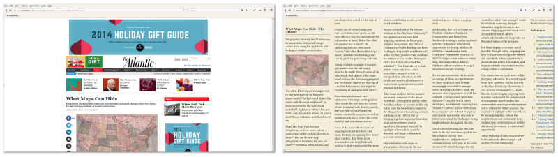

McReadability is a multi-column version of Arc90's Readability bookmarklet. The original Readability is now defunct, but you can still use this version. McReadability formats the text in constant-height columns. You scroll horizontally. Choose your settings and drag the McReadbility link below to your browser's toolbar.
Drag this link to your browser's bookmark toolbar:
Alternatively, for mobile browsers where dragging is difficult: copy the link code below, bookmark this page, edit the bookmark, and paste the code in place of the bookmark's original URL.
Now whenever you are reading a long article, click your McReadability bookmarklet to reformat the page for easy and consistent reading.